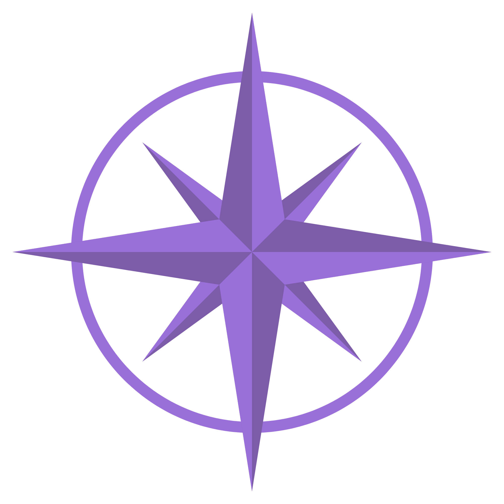

Web designer. AI enthusiast. Perpetual work-in-progress.
For forty years, I've been following my North Star. Not a career ladder. Not a mind map, vision board, or project plan. Just this: what's worth doing now? It's unconventional, but so am I.
A few months ago, right after my 58th birthday, I was in therapy spiraling about the existential terror of "What will I be doing when I'm 60?" My therapist reframed it: "What are you doing this afternoon?"
That stopped the spiral. This afternoon, I'm working on something interesting. And the afternoon after that. And the one after that. Eventually, something I do some afternoon will lead me to the thing I'll be doing when I'm 60.
I started college and promptly got an F in my first computer science class. It was Fortran on a mainframe. I was an engineering major, and it felt like trade school, so I became a Math major instead. I had no idea where it would lead. I just knew I wanted to do it. (side note: I repeated the programming class the next semester and got an A.)
When I graduated with a Bachelor's Degree in Math, I had no idea what I wanted to do, so I went to grad school. I earned a Master's Degree in Applied Mathematics and still had no idea what I wanted to do. I had written educational software for my thesis and thought I might work in technology. I ended up working for a software startup and thus began a decades-long career in technology.
I was a very serious corporate software consultant for 26 years. I mostly worked as an independent contractor because my brain didn't like being an FTE. I worked in Finance, healthcare, government, hospitality, and I'm sure there's more. I loved changing jobs because I needed variety.
I turned 50 and had spent more than half of my life in the corporate world. I impulsively quit without any real plan. Was it the most brilliant thing I've ever done? No.
I was 52 and struggling to work during lockdown during the pandemic. I started seeing a new therapist, and he immediately diagnosed me with ADHD. Suddenly everything made sense - the job-hopping, the inability to fit into a traditional FTE, the need for variety, the hyperfocus on what interests me. I wasn't broken. My brain just works differently.
I am a freelancer with too many ideas, and because I need human connection, I work part-time at the front desk in an office. I have multiple side quests. I'm building a life that works *with* my brain instead of against it.
Perl/CGI to web development to AI. Different decade, same person: watching what's next and having the guts to learn it. I've ridden every wave because I got bored with the last thing and paid attention when the next shiny thing showed up. That's not scattered. That's staying alive.
Honest answer: I don't know. I'm a corporate software consultant turned freelancer with too many ideas.
I'm in my second Saturn Return (ends when I'm 60), which is supposedly a time of massive life upheaval. My therapist reframed my spiral about turning 60 as "What are you doing this afternoon?" and that stuck.
I don't need to have the next thing figured out. I don't have a five-year plan or a grand mission statement. But I do have a North Star: I'm here to be in service to others. I know the kind of work that interests me. I know my skills. I know I work best when I have freedom to move between things, and enough variety to stay engaged.
So I'm working on something this afternoon. It could be web design. It could be building an AI automation. It could be something I haven't discovered yet. The point is: I'm always learning, always growing, always moving forward. When the next thing shows up, I'll know.

If you want to talk about web design, AI, succeeding as a woman in technology, late-diagnosed ADHD, or moving through the world without a master plan, let's chat! I don't have all the answers. I might not have any answers, and that's ok.
Email is the best way to reach me. Say hi.
nancy@nancysinclair.com